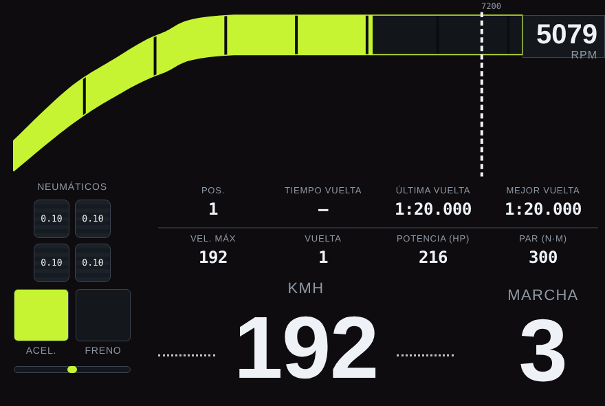
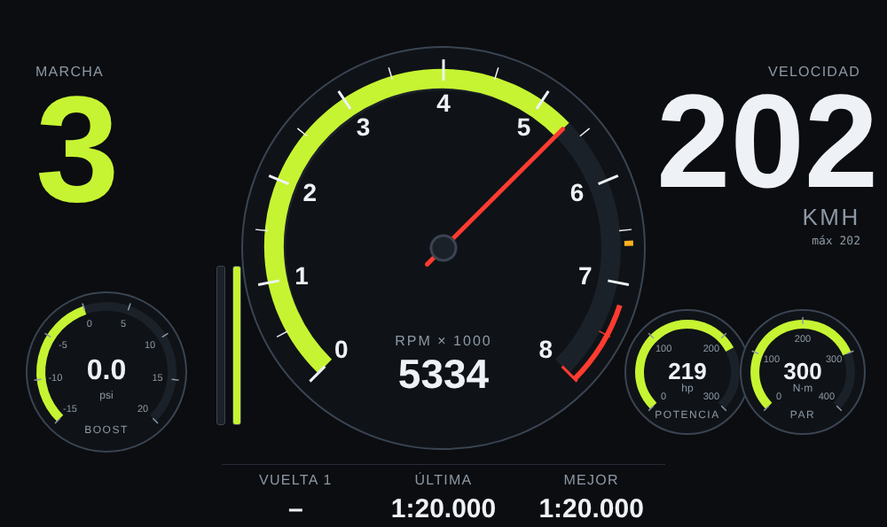
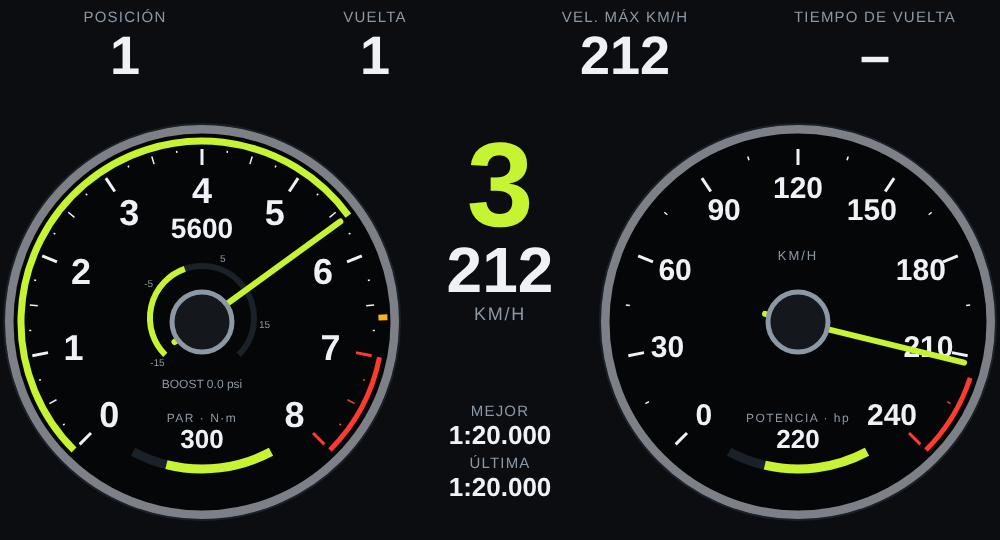
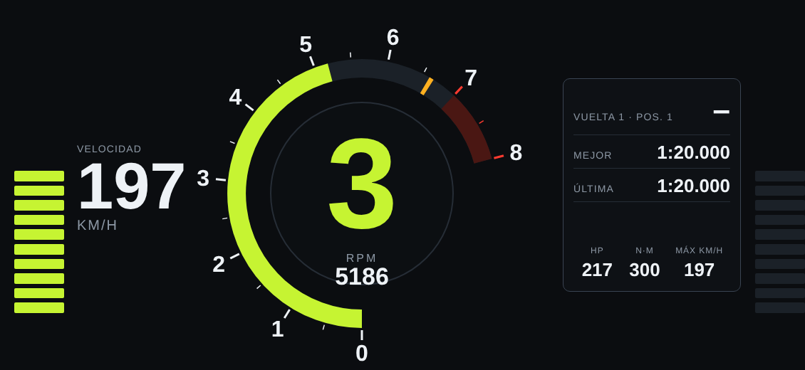

Elige tu HUD
Los cuatro usan el mismo receptor y el mismo aviso de cambio (todo el HUD se pone en rojo). Se abre en esta misma ventana; en cada HUD hay un enlace «Cambiar de HUD» para volver aquí.

HUD 1 · Barra
Barra de revoluciones, velocidad grande, neumáticos, pedales, volante y tiempos.Abrir

HUD 2 · Tacómetro
Tacómetro central con aguja, marcha y velocidad a los lados, relojes de boost, potencia y par.Abrir

HUD 3 · Dos relojes
Cuadro con tacómetro y velocímetro redondos, marcha y velocidad digital al centro, mejor y última vuelta.Abrir

HUD 4 · Deportivo
Tacómetro abierto con la marcha enorme al centro, velocidad a la izquierda, pantalla de tiempos a la derecha y barras de acelerador y freno.Abrir